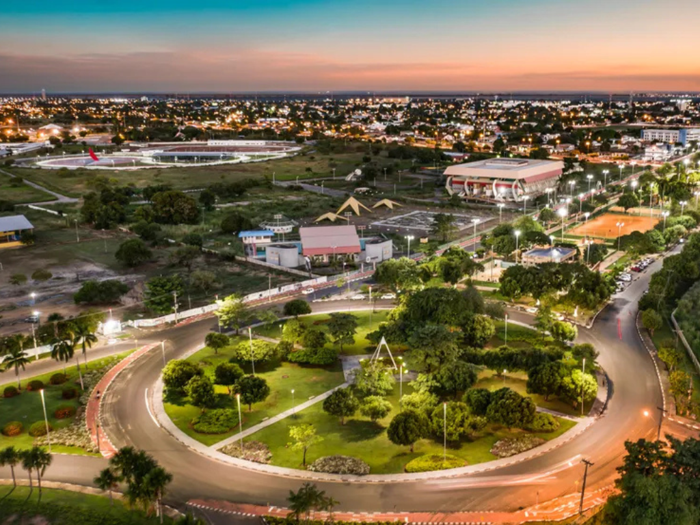

O estado de Roraima está localizado no extremo norte do Brasil e é conhecido por suas paisagens naturais impressionantes e pela forte presença de culturas indígenas. Fazendo fronteira com a Venezuela e a Guiana, Roraima possui vastas áreas de savanas, florestas e montanhas, incluindo o famoso Monte Roraima, uma das formações mais antigas do planeta. Sua capital, Boa Vista, é a única capital brasileira totalmente localizada no hemisfério norte. O estado apresenta grande diversidade cultural e ambiental, abrigando terras indígenas, parques nacionais e rica biodiversidade amazônica, além de desempenhar papel importante na integração entre o Brasil e os países vizinhos.
